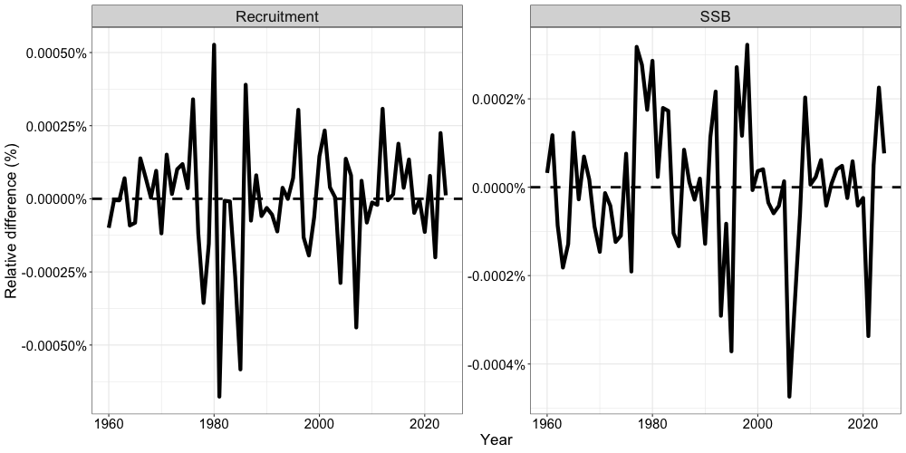
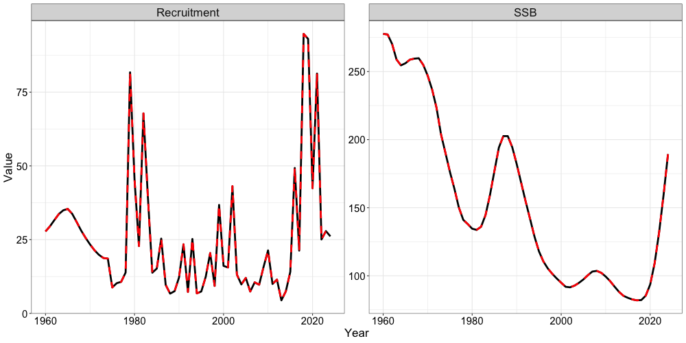

Setting up a Single Region Model (Alaska Sablefish)
e_single_region_sablefish_case_study.RmdThe SPoCK package utilizes several helper functions to
facilitate the set up of an age-structured assessment model. In this
vignette, we will demonstrate how these helper functions might be used
to set up a single-region model for Alaska sablefish. The vignette sets
up the model following the parameterization of the 2024 federal Alaska
sablefish stock assessment and compares model outputs from
SPoCK to the existing ADMB model. The 2024 federal Alaska
sablefish stock assessment is assessed on an Alaska-wide scale (from the
Bering Sea to Eastern Gulf of Alaska) as a panmictic single-region
model, with 2 sexes (females and males), 2 fishery fleets (fixed-gear
and trawl), and 3 survey fleets (domestic longline, Japanese longline,
and a domestic trawl survey).
First, let us load in any necessary packages.
# Load in packages
library(SPoCK)
library(here)
library(RTMB)
library(ggplot2)
data("sgl_rg_sable_data") # load in dataSetup Model Dimensions
To initially set the model up, an input list containing a data list,
parameter list, and a mapping list needs to be constructed. This is
aided with the function Setup_Mod_Dim, where users specify
a vector of years, ages, and lengths. Additionally, users need to
specify the number of regions modelled (n_regions), number of sexes
modelled (n_sexes), number of fishery fleets (n_fish_fleets), and number
of survey fleets (n_srv_fleets)
input_list <- Setup_Mod_Dim(years = 1:length(sgl_rg_sable_data$years), # vector of years
# (corresponds to year 1960 - 2024)
ages = 1:length(sgl_rg_sable_data$ages), # vector of ages
lens = seq(41,99,2), # number of lengths
n_regions = 1, # number of regions
n_sexes = sgl_rg_sable_data$n_sexes, # number of sexes == 1,
# female, == 2 male
n_fish_fleets = sgl_rg_sable_data$n_fish_fleets, # number of fishery
# fleet == 1, fixed gear, == 2 trawl gear
n_srv_fleets = sgl_rg_sable_data$n_srv_fleets, # number of survey fleets
verbose = FALSE
)Setup Recruitment Dynamics
Following the initialization of input_list, we can pass
the created object into the next function (Setup_Mod_Rec)
to parameterize recruitment dynamics. In the case of Alaska sablefish,
recruitment is parameterized as such:
- Mean Recruitment, with no stock recruitment relationship assumed,
- A recruitment bias ramp is used, following the methods of Methot and
Taylor 2011 (
do_bias_ramp = 1), - Two values for
sigmaRare used, the first value represents an early periodsigmaR, which is fixed at 0.4, while the second value represents a late periodsigmaR, which is freely estimated (although should be fixed). - Recruitment deviations are estimated in a penalized likelihood framework,
- Recruitment deviations are estimated for all years, except for the terminal year,
- Recruitment sex-ratios are fixed at 0.5 for each sex,
- Initial age structure is derived by assuming a geometric series
(
init_age_strc = 1; the alternative is iterating age structure to some equilibriuminit_age_strc = 0), and - A 10% fraction of the mean fishing mortality rate is assumed for initalizing the age structure.
input_list <- Setup_Mod_Rec(input_list = input_list, # input data list from above
# Model options
do_rec_bias_ramp = 1, # do bias ramp
# (0 == don't do bias ramp, 1 == do bias ramp)
# breakpoints for bias ramp
# (1 == no bias ramp - 1960 - 1980,
# 2 == ascending limb of bias ramp - 1980 - 1990,
# 3 == full bias correction - 1990 - 2022, == 4
# no bias correction - terminal year of
# recruitment estimate)
bias_year = c(length(1960:1979),
length(1960:1989),
(length(1960:2023) - 5),
length(1960:2024) - 2) + 1,
sigmaR_switch = as.integer(length(1960:1975)),
# when to switch from early to late sigmaR
dont_est_recdev_last = 1,
# don't estimate last recruitment deviate
ln_sigmaR = log(c(0.4, 1.2)),
rec_model = "mean_rec", # recruitment model
sigmaR_spec = "fix_early_est_late",
# fix early sigmaR, estiamte late sigmaR
sexratio = as.vector(c(0.5, 0.5)),
# recruitment sex ratio
init_age_strc = 1, # how to derive inital age strc
init_F_prop = 0.1 # fraction of mean F from
# dominant fleet to apply to initial age strc
)Setup Biological Dynamics
Passing on the input_list that was updated in the
previous helper function, we can then parameterize the biological
dynamics of the model. The Setup_Mod_Biologicals requires
data inputs for weight-at-age (WAA) and maturity-at-age
(MatAA), both of which are dimensioned by
n_regions, n_years, n_ages,
n_sexes. Optional model inputs include a single
ageing-error matrix AgeingError, dimensioned by
n_ages, n_ages. This can be left as NULL if no
ageing-error matrix is available, and the model will assume an identity
matrix for the ageing-error for age-composition data. Additionally, a
size-age transition matrix can be supplied if length data are being fit
to fit_lengths = 1, which are dimensioned by
n_regions, n_years, n_lens,
n_ages, n_sexes. Because natural mortality is
often poorly estimated, Alaska sablefish utilizes priors for natural
mortality, which can be specifed using the Use_M_prior = 1
argument in conjunction with the M_prior argument. The
M_prior argument expects a vector of length 2, where the
first value represents the mean prior value and the second value
represents the standard deviation of the prior (lognormal). The
M_spec argument specifies how natural mortality should be
estimated, where several options are included. In this case, we are
estimating the log natural mortality for females, and fixing the natural
mortlaity offset parameter for males (accidentally jittered in the
original assessment). Starting values and fixed parameters can be
specified using the ..., where the parameter name is
supplied, and the values provided to the parameter name represent the
starting value.
input_list <- Setup_Mod_Biologicals(input_list = input_list,
# Data inputs
WAA = sgl_rg_sable_data$WAA,
# weight-at-age
MatAA = sgl_rg_sable_data$MatAA,
# maturity at age
AgeingError = as.matrix(sgl_rg_sable_data$age_error),
# ageing error
SizeAgeTrans = sgl_rg_sable_data$SizeAgeTrans,
# size age transition matrix
# Model options
fit_lengths = 1,
# fitting length compositions
Use_M_prior = 1,
# use natural mortality prior
M_prior = c(0.1, 0.1),
# mean and sd for M prior
M_spec = "est_ln_M_only",
ln_M = log(0.1143034), # starting value for M
M_offset = -0.00819813327864
# starting value /
# fixing Male M offset (accidently jittered
# from original assessment)
)Setup Movement and Tagging Dynamics
Given that the Alaska sablefish assessment is a single region model,
no movement dynamics are specified. However, users will still need to
define how movement dynamics are parameterized. In this case, the
following code chunk specifies that movement is not estimated
(use_fixed_movement = 1), movement is an identity matrix
(Fixed_Movement = NA), and recruits do not move
(do_recruits_move = 0).
input_list <- Setup_Mod_Movement(input_list = input_list,
use_fixed_movement = 1, # don't est move
Fixed_Movement = NA, # use identity move
do_recruits_move = 0 # recruits don't move
)Specification of tagging dynamics will follow a similar fashion since
this is a single-region model. All that is necessary is updating the
input_list and setting the UseTagging argument
to a value of 0.
input_list <- Setup_Mod_Tagging(input_list = input_list,
UseTagging = 0
)Setup Catch and Fishing Mortality
Following the parameterization of biological dynamics, fishery
dynamics can then be specified and set up using the
Setup_Mod_Catch_and_F function. Again, the input_list that
gets updated from previous helper functions. Users will need to supply
the function with an array of observed catches ObsCatch,
which are dimensioned as n_regions, n_years,
and n_fish_fleets. Similarly, users will also need to
specify the catch type of these observations with the
Catch_Type argument. This argument expects a matrix
dimensioned by n_years and n_fish_fleets, and
is really only applicable in a spatial model (values of 0 indicate that
catch is aggregated across regions in some periods and fleets, while
values of 1 indicate catch is specific to each region in all periods and
fleets). Thus, in a single region model, values of 1 should
always be supplied. The function also expects the UseCatch
argument to be specified, which is dimensioned as
n_regions, n_years, and
n_fish_fleets. Essentially, users will need to fill out
whether catch is fit to for those particular partitions. Most use cases
of this argument are scenarios in which catch is observed to be a value
of 0, where the helper function automatically turns off the estimation
of fishing mortality deviations for those partitions. Additional model
options specified for this case study include: 1) whether fishing
mortality penalties are utilized to help estimate deviations
Use_F_pen = 1, to fix the standard deviation for catches
(sigmaC_spec = 'fix'), and any constants to add to catch
Catch_Constant = c(0.01, 0.8), which has a length of
n_fish_fleets. Ideally, the Catch_Constant
argument is not needed, since it is not necessary to fit to catch values
of 0. In such cases, users can leave this argument as NULL, and the
function will automatically populate this with
Catch_Constant <- rep(0, input_list$data$n_fish_fleets).
input_list <- Setup_Mod_Catch_and_F(input_list = input_list,
# Data inputs
ObsCatch = sgl_rg_sable_data$ObsCatch,
Catch_Type =
array(1, dim = c(length(input_list$data$years),
input_list$data$n_fish_fleets)),
UseCatch = sgl_rg_sable_data$UseCatch,
# Model options
Use_F_pen = 1,
# whether to use f penalty, == 0 don't use, == 1 use
sigmaC_spec = 'fix',
Catch_Constant = c(0.01, 0.8)
)Setup Index and Composition Data (Fishery and Survey)
Some of the more involved helper functions used to set up the single
region model are the Setup_Mod_FishIdx_and_Comps,
Setup_Mod_SrvIdx_and_Comps,
Setup_Mod_Fishsel_and_Q, and
Setup_Mod_Srvsel_and_Q functions. These helper functions
essentially facilitate the parameterization of selectivity and
catchability for both the fishery and survey, compositional likelihood
types, how composition data are structured, and the types of indices
used (biomass vs. abundance). The fishery and survey helper functions
described in the following sections are essentially equivalent with
respect to data arguments and inputs that are expected, but are
specified independently for fisheries and surveys.
To set up fishery indices and composition data, users will need to
supply arrays of observed fishery indices and their associated standard
errors (ObsFishIdx and ObsFishIdx_SE), which
are dimensioned by by n_regions, n_years,
n_fish_fleets. If fleets do not have data, this can be
input as NA and the UseFishIdx argument (also
dimensioned by n_regions, n_years,
n_fish_fleets) can be used to ensure that these data are
not fit to. Similarly, users will need to supply both fishery age
composition data and length composition data. Both
ObsFishAgeComps and ObsFishLenComps are
dimensioned by n_regions, n_years,
n_bins (n_ages | n_lens), n_sexes,
n_fish_fleets. Data inputs are also required to denote
whether composition data are used or available for thos regions, years,
and fleets. This can be specified using both
UseFishAgeComps and UseFishLenComps, which
expects values of 0 (don’t fit) or 1 (fit), and are dimensioned by
n_regions, n_years, and
n_fish_fleets. Users can optionally supply
ISS_FishAgeComps and ISS_FishLenComps data
inputs which specify the input sample size for these composition data,
and are dimensioned by n_regions, n_years,
n_sexes, and n_fish_fleets. If this is not
specified (i.e., left NULL), the helper function will automatically sum
up the ObsFishAgeComps and ObsFishLenComps by
their partitions and use the those sums as the input sample size. Thus,
if observed composition data are input as proportions, the model will
potentially incorrectly assume an input sample size of 1 for these
data.
For Alaska sablefish, fishery indices are currently utilized for the
fixed-gear fleet (dominant fleet), which are biomass based, while the
trawl fleet does not fit to fishery indices. This can be specified using
the fish_idx_type argument, where biom
represents biomass indices, and none indicates not fishery
indices are available. Multinomial likelihoods are also assumed for
fishery ages, which are specified with
FishAgeComps_LikeType. However, only the fixed-gear fleet
has fishery age compositions available. Thus, the
FishAgeComps_LikeType is specified as
c("Multinomial", "none"). Fishery length compositions
FishLenComps_LikeType are available for both fleets and are
specified as Multinomial. Currently, Alaska sablefish is a
sex-structured model but age-compositions are not sex-specific. This is
specified using
FishAgeComps_Type = c("agg_Year_1-terminal_Fleet_1", "none_Year_1-terminal_Fleet_2"),
which indicates to the model that these data should be fit to as
aggregated across sexes for all years and for fleet 1 (fixed-gear)
(i.e., the Multinomial expected proportions are summed across sexes).
The none_Year_1-terminal_Fleet_2 character indicates to not
do anything with the age compositions for the trawl fishery, since these
are not availiable. For fishery length compositions, these are specified
as
FishLenComps_Type = c("spltRspltS_Year_1-terminal_Fleet_1", "spltRspltS_Year_1-terminal_Fleet_2")
because both fleets have length composition data that are sex-specific.
Here, the spltRspltS character indicates to the model that
these data sum to 1 for each sex and each region, and no implicit
sex-ratios can be inferred using these composition data from the model.
Lastly, there are some ADMB aggregation quirks specific to Alaska
sablefish that can be ignored by the user (and will be removed in later
version of the model).
input_list <- Setup_Mod_FishIdx_and_Comps(input_list = input_list,
# data inputs
ObsFishIdx = sgl_rg_sable_data$ObsFishIdx,
ObsFishIdx_SE = sgl_rg_sable_data$ObsFishIdx_SE,
UseFishIdx = sgl_rg_sable_data$UseFishIdx,
ObsFishAgeComps = sgl_rg_sable_data$ObsFishAgeComps,
UseFishAgeComps = sgl_rg_sable_data$UseFishAgeComps,
ISS_FishAgeComps = sgl_rg_sable_data$ISS_FishAgeComps,
ObsFishLenComps = sgl_rg_sable_data$ObsFishLenComps,
UseFishLenComps = sgl_rg_sable_data$UseFishLenComps,
ISS_FishLenComps = sgl_rg_sable_data$ISS_FishLenComps,
# Model options
fish_idx_type =
c("biom", "none"),
# biomass indices for fishery fleet 1 and 2
FishAgeComps_LikeType =
c("Multinomial", "none"),
# age comp likelihoods for fishery fleet 1 and 2
FishLenComps_LikeType =
c("Multinomial", "Multinomial"),
# length comp likelihoods for fishery fleet 1 and 2
FishAgeComps_Type =
c("agg_Year_1-terminal_Fleet_1",
"none_Year_1-terminal_Fleet_2"),
# age comp structure for fishery fleet 1 and 2
FishLenComps_Type =
c("spltRspltS_Year_1-terminal_Fleet_1",
"spltRspltS_Year_1-terminal_Fleet_2"),
# length comp structure for fishery fleet 1 and 2
FishAge_comp_agg_type = c(0,NA),
# ADMB aggregation quirks, ideally get rid of this
FishLen_comp_agg_type = c(1,1)
# ADMB aggregation quirks, ideally get rid of this
)The same arguments are expected for survey indices and compositions. Here, 3 survey fleets are specified, where they are abundance based for survey fleet 1 and 3, and biomass based for survey fleet 2. Age compositions are aggregated by sex for survey fleet 1 and 3, and are not availiable for survey fleet 2, while length compositions are split by sex for all survey fleets. All compositions for the survey fleets assume a Mulinomial likelihood.
input_list <- Setup_Mod_SrvIdx_and_Comps(input_list = input_list,
# data inputs
ObsSrvIdx = sgl_rg_sable_data$ObsSrvIdx,
ObsSrvIdx_SE = sgl_rg_sable_data$ObsSrvIdx_SE,
UseSrvIdx = sgl_rg_sable_data$UseSrvIdx,
ObsSrvAgeComps = sgl_rg_sable_data$ObsSrvAgeComps,
ISS_SrvAgeComps = sgl_rg_sable_data$ISS_SrvAgeComps,
UseSrvAgeComps = sgl_rg_sable_data$UseSrvAgeComps,
ObsSrvLenComps = sgl_rg_sable_data$ObsSrvLenComps,
UseSrvLenComps = sgl_rg_sable_data$UseSrvLenComps,
ISS_SrvLenComps = sgl_rg_sable_data$ISS_SrvLenComps,
# Model options
srv_idx_type = c("abd", "biom", "abd"),
# abundance and biomass for survey fleet 1, 2, and 3
SrvAgeComps_LikeType =
c("Multinomial", "none", "Multinomial"),
# survey age composition likelihood for survey fleet
# 1, 2, and 3
SrvLenComps_LikeType =
c("Multinomial", "Multinomial", "Multinomial"),
# survey length composition likelihood for survey fleet
# 1, 2, and 3
SrvAgeComps_Type = c("agg_Year_1-terminal_Fleet_1",
"none_Year_1-terminal_Fleet_2",
"agg_Year_1-terminal_Fleet_3"),
# survey age comp type
SrvLenComps_Type = c("spltRspltS_Year_1-terminal_Fleet_1",
"spltRspltS_Year_1-terminal_Fleet_2",
"spltRspltS_Year_1-terminal_Fleet_3"),
# survey length comp type
SrvAge_comp_agg_type = c(1,NA,1),
# ADMB aggregation quirks, ideally get rid of this
SrvLen_comp_agg_type = c(0,0,0)
# ADMB aggregation quirks, ideally get rid of this
)Setup Selectivity and Catchability (Fishery and Survey)
Specifying fishery/survey selectivity and catchability options (the
function arguments are the same for both the fishery and survey) can be
a bit involved as well. In SPoCK, there are several
selectivity options, which include:
- Whether we have continuous time-varying selectivity processes
(
cont_tv_fish_selorcont_tv_srv_sel). For sablefish, continuous time-varying selectivity is not used and is specified asnone_Fleet_x, - Whether we have selectivity blocks (
fish_sel_blocksorsrv_sel_blocks). Sablefish assumes 3 time-blocks for the fixed-gear fleet and time-invariant selectivity for the trawl fishery. In general, time-blocks can be specified asBlock_v_Year_x-y_Fleet_z, whereBlock_vrepresents the block number,Year_x-yrepresents the year range (x-y) for which the block number applies to, andFleet_zrepresents the fleet to time-block for. If no time-blocks are specified, this can be left asnone_Fleet_z, - The type of parametric selectivity form to specify for the different
fleets (
fish_sel_modelorsrv_sel_model). Sablefish assumeslogist1for the fixed-gear fleet (logistic specified asa50andk), andgammadome-shaped selectivity for the trawl fleet, - The number of catchability blocks specified
(
fish_q_blocksorsrv_q_blocks). This is specified in an identical manner as selectivity blocks (point 2), - How fishery or survey selectivity parameters should be estimated
(
fish_fixed_sel_pars). In the case of sablefish, we are first specifying that all selectivity parameters (by time-blocks and sexes) should be estimated. However, there are some more nuanced parameter sharing across sexes and time-blocks that are used for sablefish to help stabilize the model (last part of this code chunk), and cannot be easily generalized. Thus, users can manually extract themaplist from the updatedinput_listobject to modify how parameters should be fixed or shared, - Lastly, how fishery or survey catchability should be estimated
(
fish_q_specorsrv_q_spec). For the fishery, catchability is estimated for all regions (est_all, since this is a single-region model) for the fixed-gear fleet, and specified asfixfor the trawl fishery (since no indices are available).
input_list <- Setup_Mod_Fishsel_and_Q(input_list = input_list,
# Model options
cont_tv_fish_sel = c("none_Fleet_1", "none_Fleet_2"),
# fishery selectivity, whether continuous time-varying
# fishery selectivity blocks
fish_sel_blocks =
c("Block_1_Year_1-35_Fleet_1",
# block 1, fishery ll selex
"Block_2_Year_36-56_Fleet_1",
# block 2 fishery ll selex
"Block_3_Year_57-terminal_Fleet_1",
# block 3 fishery ll selex
"none_Fleet_2"),
# no blocks for trawl fishery
# fishery selectivity form
fish_sel_model =
c("logist1_Fleet_1",
"gamma_Fleet_2"),
# fishery catchability blocks
fish_q_blocks =
c("Block_1_Year_1-35_Fleet_1",
# block 1, fishery ll selex
"Block_2_Year_36-56_Fleet_1",
# block 2 fishery ll selex
"Block_3_Year_57-terminal_Fleet_1",
# block 3 fishery ll selex
"none_Fleet_2"),
# no blocks for trawl fishery
# whether to estimate all fixed effects
# for fishery selectivity and later modify
# to fix and share parameters
fish_fixed_sel_pars_spec =
c("est_all", "est_all"),
# whether to estimate all fixed effects
# for fishery catchability
fish_q_spec =
c("est_all", "fix")
# estimate fishery q for fleet 1, not for fleet 2
)
# additional mapping for fishery selectivity
# sharing delta across sexes from early domestic fishery (first time block)
input_list$map$ln_fish_fixed_sel_pars <- factor(c(1:7, 2, 8:11, rep(12:13,3), rep(c(14,13),3)))Again, the same arguments are expected for setting up survey selectivity, and there are similarly some nuanced parameter fixing and sharing to help facilitate model stability.
input_list <- Setup_Mod_Srvsel_and_Q(input_list = input_list,
# Model options
# survey selectivity, whether continuous time-varying
cont_tv_srv_sel =
c("none_Fleet_1",
"none_Fleet_2",
"none_Fleet_3"),
# survey selectivity blocks
srv_sel_blocks =
c("Block_1_Year_1-56_Fleet_1",
# block 1 for domestic ll survey
"Block_2_Year_57-terminal_Fleet_1",
# block 2 for domestic ll survey
"none_Fleet_2",
"none_Fleet_3"
), # no blocks for trawl and jp survey
# survey selectivity form
srv_sel_model =
c("logist1_Fleet_1",
"exponential_Fleet_2",
"logist1_Fleet_3"),
# survey catchability blocks
srv_q_blocks =
c("none_Fleet_1",
"none_Fleet_2",
"none_Fleet_3"),
# whether to estiamte all fixed effects
# for survey selectivity and later
# modify to fix/share parameters
srv_fixed_sel_pars_spec =
c("est_all",
"est_all",
"est_all"),
# whether to estiamte all
# fixed effects for survey catchability
srv_q_spec =
c("est_all",
"est_all",
"est_all")
)
# ll survey, share delta female (index 2) across time blocks and to the coop jp ll survey delta
# ll survey, share delta male (index 5) across time blocks and to the coop jp ll survey delta
# coop jp survey does not estimate parameters and shares deltas with longline survey
# single time block with trawl survey and only one parameter hence,
# only one parameter estimated across blocks (indices 7 and 8)
input_list$map$ln_srv_fixed_sel_pars <-
factor(c(1:3, 2, 4:6, 5,rep(7,4),
rep(8, 4), rep(c(NA,2), 2), rep(c(NA, 5), 2)))
# Coop JP Survey (Logistic) Single time block (these estimates are fixed!)
input_list$par$ln_srv_fixed_sel_pars[1,,,1,3] <- c(0.980660760456, 0.9295241)
input_list$par$ln_srv_fixed_sel_pars[1,,,2,3] <- c(1.22224502478, 0.8821623)Setup Model Weighting
The last helper function that needs to be utilized to setup and run
the model is the Setup_Mod_Weighting function. This
function helps specify how the different data sources are weighted and
whether ADMB (likelihoods = 0) or TMB-style likelihoods are
used (likelihoods = 1). In general, if ADMB-style
likelihoods are used, data sources are weighted with a combination of
(which weights the entiree data source likelihood, e.g.,
)
and the specified “observed” standard errors / input sample sizes . In
the context of composition data, these
values are determined using Francis reweighting to right-weight these
data. If Francis-reweighting is not used, then values of 1 can be input
for the weights of these data. Moreover, when using ADMB-style
likelihoods, standard errors of indices are expected to be
(i.e.,ObsFishIdx_SE and ObsSrvIdx_SE):
.
Fitting to catch data using ADMB-style likelihoods assumes a sum of
squares calculation between observed and predicted catch, following a
large
value applied to the overall catch data source to ensure that these data
closely fit to.
In the context of TMB-style likelihoods
(likelihoods = 1), data sources should ideally only be
weighted using
values, and not in conjunction with
values. Thus, users can leave the arguments Wt_Catch,
Wt_FishIdx, Wt_SrvIdx, Wt_Rec,
and Wt_F blank (NULL), which get automatically filled in as
1. If Francis-reweighting is conducted using TMB-style likelihoods, it
is the same process described above, where users will need to fill in
the weights determined by Francis-reweighitng. If not, users can specify
a value of 1. Thus, in contrast to ADMB-style likelihoods, indices are
weighted as:
.
Moreover, it is not recommended to fit to catch data with a high
value when using TMB-style likelihoods (i.e., Wt_Catch
should be set to 1) and users should weight catch data using the
sigmaC_spec and ln_sigmaC arguments in the
Setup_Mod_Catch_and_F function. The single region pollock
vignette demonstrates use of TMB-style likelihoods. Finally,
sablefish_ADMB is specific to Alaska sablefish and
specifies the order of operations for size-age transition matrices, as
well as how indices should be calculated (e.g., using mid-year mortality
vs not). In the following iterations of this package, this option will
most likely be removed.
# set up data weighting stuff
Wt_FishAgeComps <- array(NA, dim = c(input_list$data$n_regions,
length(input_list$data$years),
input_list$data$n_sexes,
input_list$data$n_fish_fleets))
# weights for fishery age comps
Wt_FishAgeComps[1,,1,1] <- 0.826107286513784
# Weight for fixed gear age comps
# Fishery length comps
Wt_FishLenComps <- array(NA, dim = c(input_list$data$n_regions,
length(input_list$data$years),
input_list$data$n_sexes,
input_list$data$n_fish_fleets))
Wt_FishLenComps[1,,1,1] <- 4.1837057381917
# Weight for fixed gear len comps females
Wt_FishLenComps[1,,2,1] <- 4.26969350917589
# Weight for fixed gear len comps males
Wt_FishLenComps[1,,1,2] <- 0.316485920691651
# Weight for trawl gear len comps females
Wt_FishLenComps[1,,2,2] <- 0.229396580680981
# Weight for trawl gear len comps males
# survey age comps
Wt_SrvAgeComps <- array(NA, dim = c(input_list$data$n_regions,
length(input_list$data$years),
input_list$data$n_sexes,
input_list$data$n_srv_fleets))
# weights for survey age comps
Wt_SrvAgeComps[1,,1,1] <- 3.79224544725927
# Weight for domestic survey ll gear age comps
Wt_SrvAgeComps[1,,1,3] <- 1.31681114024037
# Weight for coop jp survey ll gear age comps
# Survey length comps
Wt_SrvLenComps <- array(0, dim = c(input_list$data$n_regions,
length(input_list$data$years),
input_list$data$n_sexes,
input_list$data$n_srv_fleets))
Wt_SrvLenComps[1,,1,1] <- 1.43792019016567
# Weight for domestic ll survey len comps females
Wt_SrvLenComps[1,,2,1] <- 1.07053763450712
# Weight for domestic ll survey len comps males
Wt_SrvLenComps[1,,1,2] <- 0.670883273592302
# Weight for domestic trawl survey len comps females
Wt_SrvLenComps[1,,2,2] <- 0.465207132450763
# Weight for domestic trawl survey len comps males
Wt_SrvLenComps[1,,1,3] <- 1.27772810174693
# Weight for coop jp ll survey len comps females
Wt_SrvLenComps[1,,2,3] <- 0.857519546948587
# Weight for coop jp ll survey len comps males
input_list <- Setup_Mod_Weighting(input_list = input_list,
sablefish_ADMB = 1,
likelihoods = 0,
Wt_Catch = 50,
Wt_FishIdx = 0.448,
Wt_SrvIdx = 0.448,
Wt_Rec = 1.5,
Wt_F = 0.1,
Wt_Tagging = 0,
Wt_FishAgeComps = Wt_FishAgeComps,
Wt_FishLenComps = Wt_FishLenComps,
Wt_SrvAgeComps = Wt_SrvAgeComps,
Wt_SrvLenComps = Wt_SrvLenComps
)Fit Model and Plot
We are finally done with the setup! Now, we can run our model. This
is aided by the fit_model function, which expects a
data, mapping, and parameters
list and uses the MakeADFUN function internally. These
lists can be extracted from the input_list constructed. If
users want to utilize and integrate random effects out using Laplace
Approximation, they can supply a character vector to the
random argument. For instance, if we wanted to integrate
recruitment deviations out, we would set:
random = c("ln_RecDevs"). The newton_loops
argument indicates whether or not the user wants to take additional
newton steps to ensure that the model has achieved a local minimum, and
uses both the Hessian and gradients to compute this (and thus, serves as
an additional check for model convergence). The report file is extracted
out internally from fit_model and standard errors can then
be extracted using the RTMB::sdreport function.
# extract out lists updated with helper functions
data <- input_list$data
parameters <- input_list$par
mapping <- input_list$map
# Fit model
sabie_rtmb_model <- fit_model(data,
parameters,
mapping,
random = NULL,
newton_loops = 3,
silent = TRUE
)
# Get standard error report
sabie_rtmb_model$sd_rep <- RTMB::sdreport(sabie_rtmb_model)Finally, we can compare outputs from ADMB to RTMB. For brevity, we will only show comparisons of spawning biomass and recruitment between the two models.
# Get recruitment time-series
rec_series <- data.frame(Par = "Recruitment",
Year = 1960:2024,
RTMB = t(sabie_rtmb_model$rep$Rec),
ADMB = sgl_rg_sable_data$admb_recr)
# Get SSB time-series
ssb_series <- data.frame(Par = "SSB",
Year = 1960:2024,
RTMB = t(sabie_rtmb_model$rep$SSB),
ADMB = sgl_rg_sable_data$admb_spbiom)
ts_df <- rbind(ssb_series,rec_series) # bind together
ggplot(ts_df, aes(x = Year, y = ((RTMB - ADMB) / ADMB))) +
geom_line(size = 2) +
geom_hline(yintercept = 0, lty = 2, size = 1.3) +
facet_wrap(~Par, scales = "free_y") +
labs(y = "Relative difference (%)") +
SPoCK::theme_sablefish()
ggplot() +
geom_line(ts_df, mapping = aes(x = Year, y = RTMB, color = 'RTMB'), size = 1.3, lty = 1) +
geom_line(ts_df, mapping = aes(x = Year, y = ADMB, color = 'ADMB'), size = 1.3, lty = 2) +
facet_wrap(~Par, scales = "free_y") +
scale_color_manual(values = c('RTMB' = 'black', 'ADMB' = 'red')) +
labs(x = "Year", color = 'Model', y = "Value") +
SPoCK::theme_sablefish()